Templomok, magánlakások és középületek számára készítek üvegfestményeket és díszüvegeket — a tervezéstől a helyszíni beépítésig, kézműves technikával.
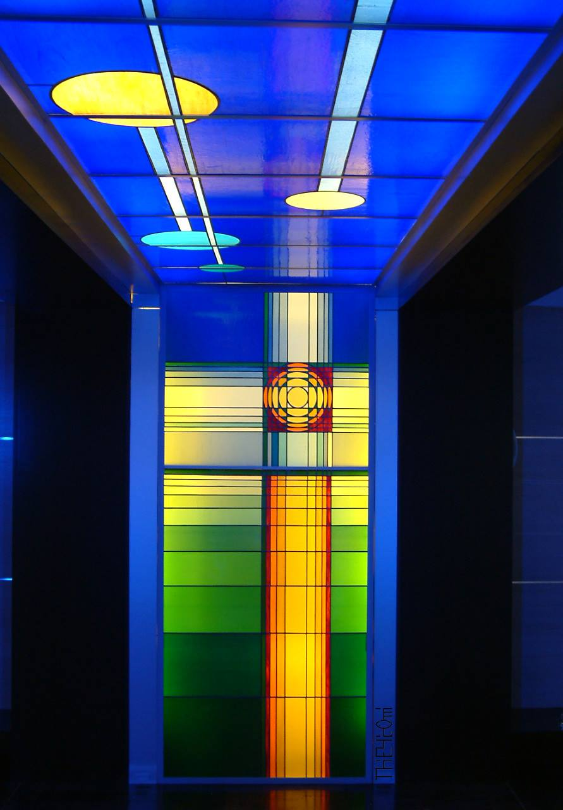
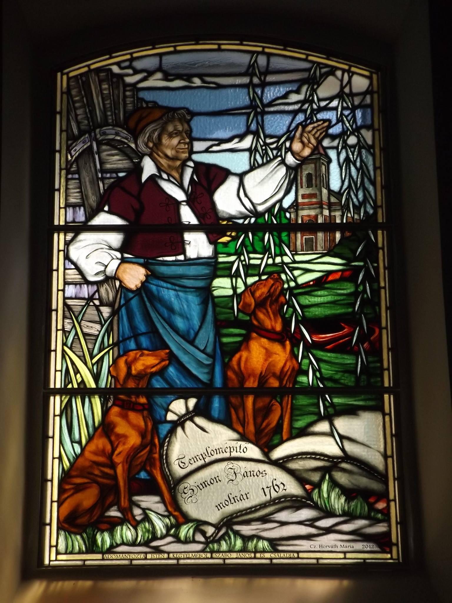
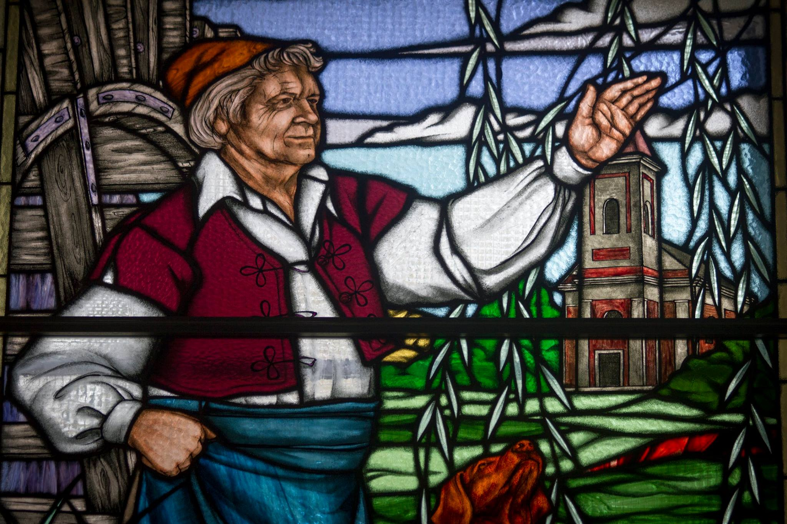
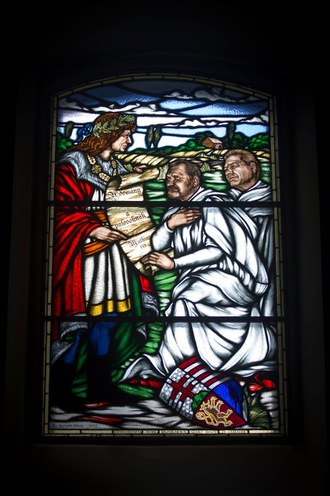
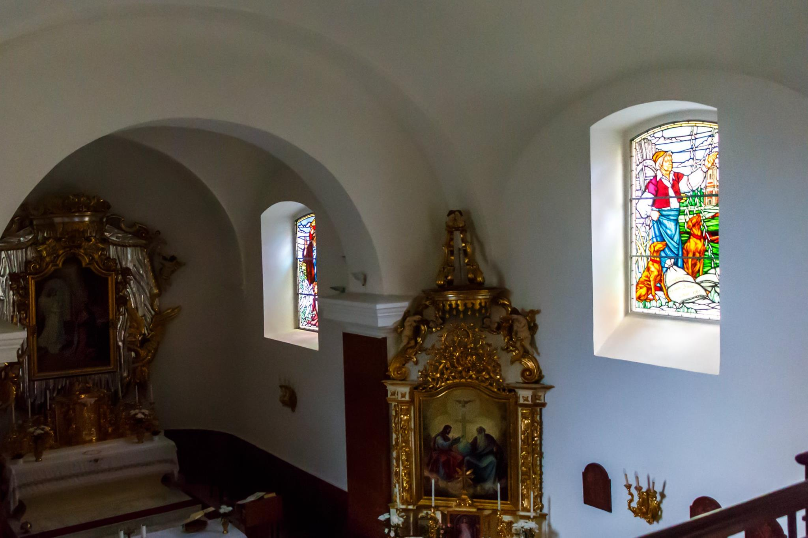
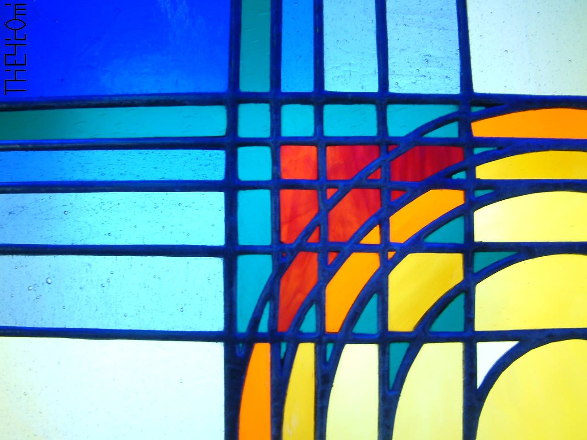
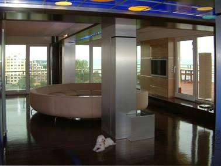
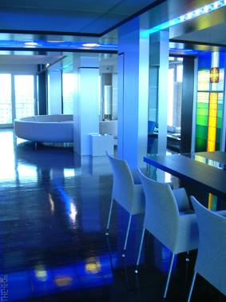
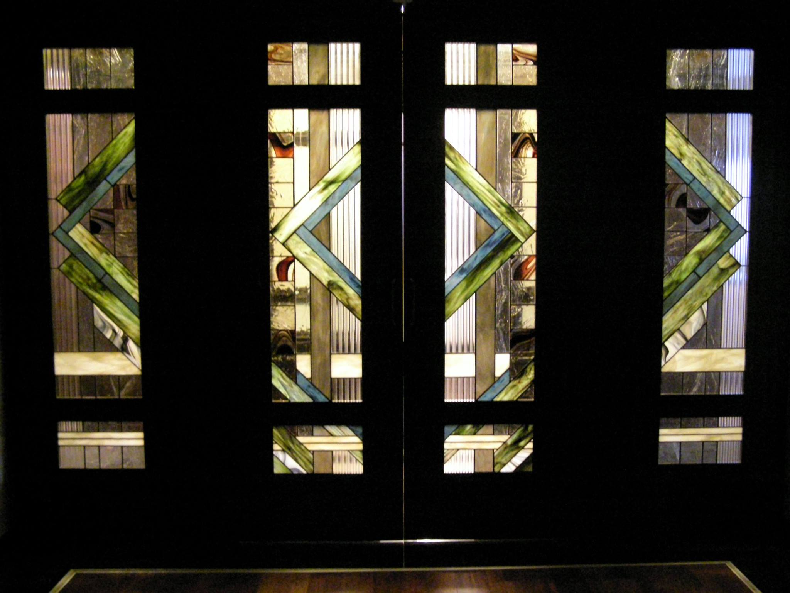
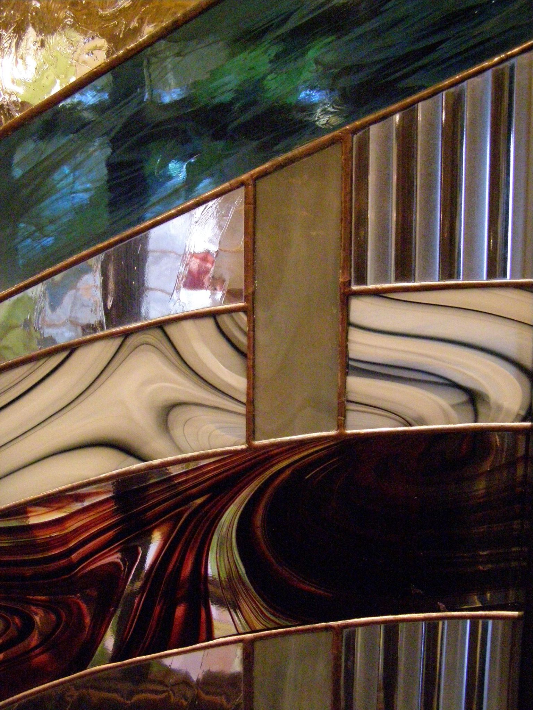
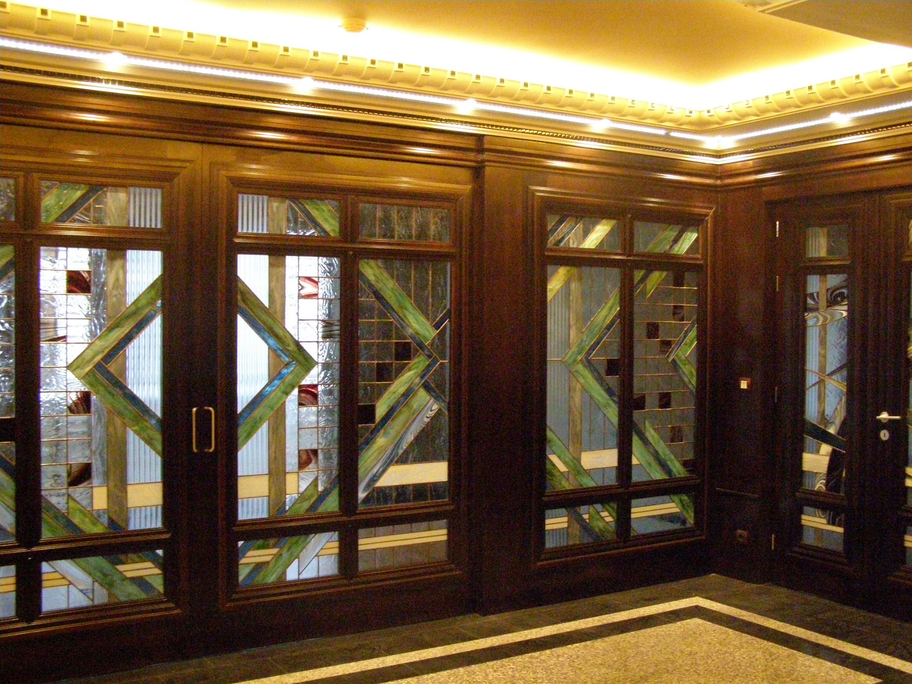
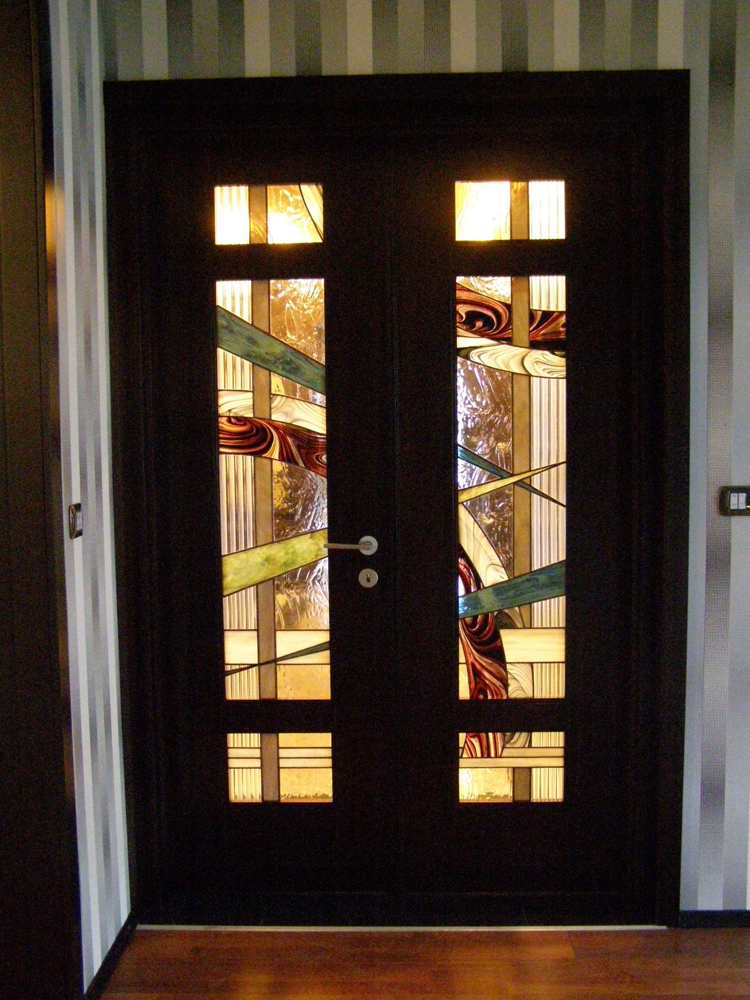
Egyedi tervezésű ólomüveg és tiffany üvegablakokat, díszüvegeket készítek — templomi ablakoktól a magánlakások ajtóbetétein át a felülvilágítókig. Referenciáim között szerepelnek a hejőcsabai római katolikus templom figurális ablakai, egy siófoki nyaraló teljes üvegfala, valamint Római-parti magánlakás díszüvegei.
Minden munka a helyszínhez és a megrendelő elképzeléseihez igazodva, hagyományos kézműves technikával készül — a tervrajztól az utolsó ólomszálig.
Kérjük, adja meg az alábbi adatokat — az üzenet Messengeren keresztül érkezik hozzám, és minden megkeresésre személyesen válaszolok.